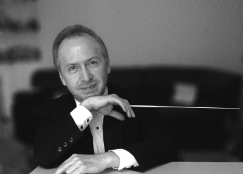

PATRICIO AIZAGA
El Director ecuatoriano Patricio Aizaga estudió música, piano, composición y dirección orquestal y coral en Ecuador bajo la guía de sus padres, el Maestro Claudio Aizaga y Giovanna Villasis. Posteriormente estudió dirección orquestal y de ópera en la Universidad de Indiana, Bloomington, con Robert Porco, gracias a una beca concedida por el gobierno de USA. Participó en clases magistrales con Lorin Maazel, Maurice Abravanel, Gunther Herbig, Harold Faberman, Gustav Meier y Daniel Lewis.
Por sus logros, el Mtro. Aizaga ha recibido reconocimientos nacionales e internacionales: "Premio Joven Sobresaliente del Ecuador 1991"; Título internacional de "Artista de la UNESCO Por la Paz", París. En 1998 y 2003 fue condecorado por el Congreso Nacional de Ecuador. En el 2000 fue galardonado de manos del Maestro José Antonio Abreu, con la Medalla del Sistema de las Orquestas Juveniles de Venezuela; el año 2003 fue honrado nuevamente por la UNESCO, en reconocimiento a los "Logros en la Educación Musical, Contribución y Desarrollo de Ecuador ante la Comunidad Internacional"; en el 2008, recibió el Premio a la "Excelencia Educativa" otorgado por la Fundación para la Integración de América Latina; el año 2009 es nombrado “Profesor Honoris Causa” por el Conservatorio George Gershwin; en Diciembre de 2012, recibe la Condecoración “Pablo Traversari” en la Sesión “Grandes Collares” otorgado por el Distrito Metropolitano de Quito.
El Maestro Aizada ha establecido una destacada carrera internacional con premios y actuaciones en cuatro continentes. Sus compromisos incluyen actuaciones con la Orquesta Sinfónica Simón Bolívar de Venezuela, Washington Symphony Orchestra, Regina Symphony Orchestra. Entre los solistas internacionales que ha acompañado su batuta se puede mencionara a Joshua Bell, Eugene Fodor, David Kim, Alexis Cárdenas, Jerome Rose, Jeffrey Chappell, Roberto Bravo. Aizaga ha dirigido en el Berliner Philharmonie Hall, en la Organización de los Estados Americanos en Washington DC, Sede de la UNESCO-Paris, Nikolaisaal de Potsdam, Hannover Konzerthaus, Teatro Teresa Carreño de Venezuela, Palacio para las Artes Istana Budaya de Kuala Lumpur, Palacio Obere Rathaushalle de Bremen, Cairo Opera House de Egipto, Centro para las Artes de la Ciudad de México, Conexus Arts Center de Canadá. Designación intenacional de “Artista de la UNESCO por la Paz” Actualmente es Presidente de la Fundación Orquesta Sinfónica Juvenil de Ecuador. Desde el año 2012 es miembro del Faculty del "Leaders Program de la Youth Orchestra of the Americas" YOA.